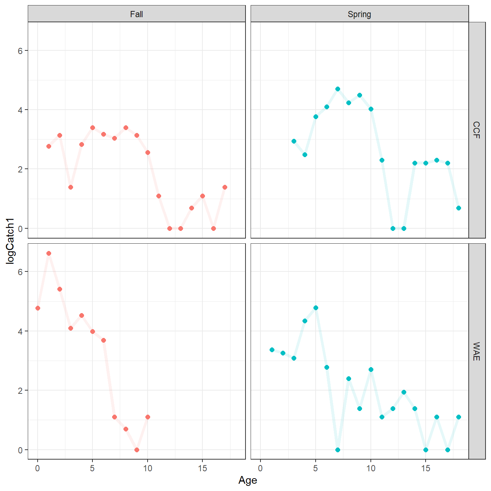
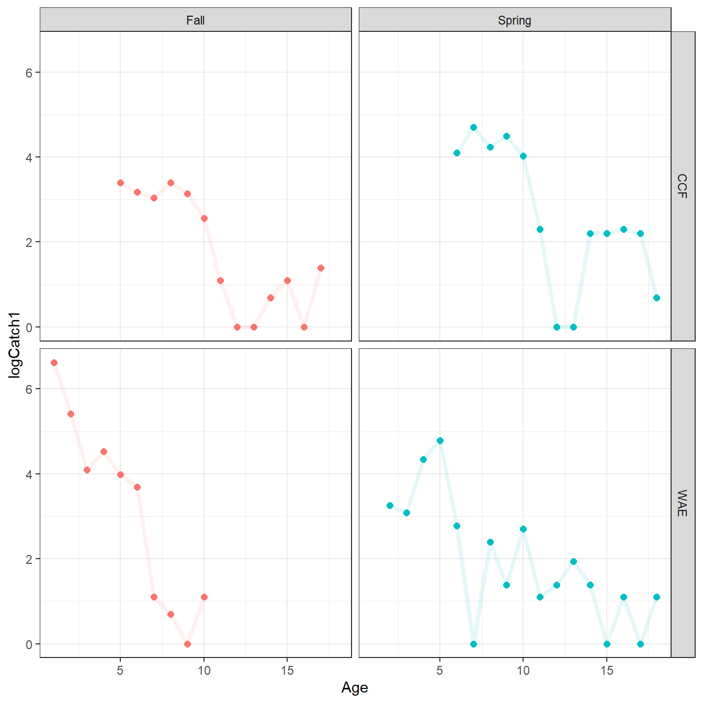
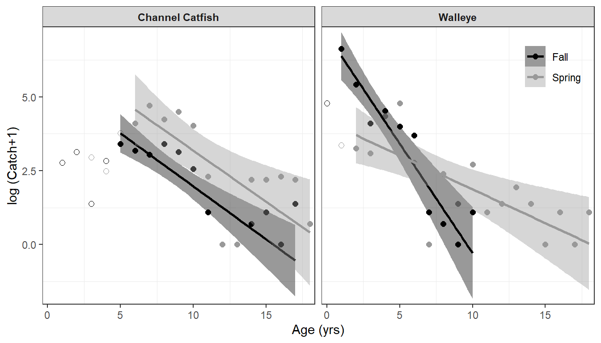

library(tidyverse) # for dplyr, tidyr, purr packages
library(FSA) # for catchCurve functionalityIntroduction
In a previous post a helper function was created and some of the map family of functions from purr were used to efficiently create and apply an age-length key (ALK) to assign estimated ages to unaged fish in a sample. That post will be extended here by using functions from purr and FSA to efficiently compute mortality estimates from catch curves for multiple groups of fish.
The following packages are loaded for use below.
The random number seed was set to ensure repeatability for the random components of alkIndivAge() below.
set.seed(14354454)
Initial Wrangling & Catch-at-Age Summary
This post begins with the final data frame from the previous post of lengths and ages for all sampled Channel Catfish (Ictalurus punctatus) and Walleye (Sander vitreus) data. A portion of the resultant data frame is shown below, but the code is folded to save space.1 Note here that the final data frame is called dat.2
1 Please see the previous post for a thorough description of this process.
2 Rather than dat3 as in the previous post.
Code
## Computes and applies an ALK
## data: The data frame with, at least, the age & length variables
## avar: The name (without quotes) of the age variable in data
## lvar: The name (without quotes) of the length variable in data
## w: The width of length categories/bins for use in the ALK
## Returns the data data frame with ages in avar assigned from the ALK for
## unaged fish and a new length category (lcat) variable derived from w
applyALK <- function(data,avar,lvar,w) {
## Get avar variable name as character for non-tidyverse functions below
avarn <- deparse(substitute(avar))
## Add length category variable
data <- data |> dplyr::mutate(lcat=FSA::lencat({{lvar}},w=w))
## Separate into aged and unaged dataframes
aged <- data |> dplyr::filter(!is.na({{avar}}))
unaged <- data |> dplyr::filter(is.na({{avar}}))
## Make ALK (find frequencies, convert to row proportions)
ALK <- prop.table(xtabs(as.formula(paste0("~lcat+",avarn)),data=aged),margin=1)
## Apply ALK according to Isermann-Knight method
tmp <- FSA::alkIndivAge(ALK,as.formula(paste0(avarn,"~lcat")),data=unaged)
## Put aged and newly assigned age data frames together to return
dplyr::bind_rows(aged,tmp)
}
## Wrangle the data
dat <- read.csv("../2023-4-23_Multiple_ALKs/JFWM-20-027.S1.csv") |>
select(-Weight,-Sex,-BCAge,-BCLength,-Year) |>
mutate(Season=case_when(
Month=="May" ~ "Spring",
Month=="September" ~ "Fall"
)) |>
filter(!is.na(Length)) |>
filter(!(Spp=="CCF" & Season=="Spring" & Length<279)) |>
filter(!(Spp=="CCF" & Season=="Fall" & Length<200)) |>
split(~Spp+Season) |>
map_df(applyALK,avar=Age,lvar=Length,w=10) |>
select(Spp,Season,Age,Length,lcat)headtail(dat)#R| Spp Season Age Length lcat
#R| 1 CCF Fall 1 232 230
#R| 2 CCF Fall 1 216 210
#R| 3 CCF Fall 1 238 230
#R| 2355 WAE Spring 10 632 630
#R| 2356 WAE Spring 10 653 650
#R| 2357 WAE Spring 13 720 720These data are summarized to provide total catches at each OBSERVED age for each species and season combination.
CatAge <- dat |>
group_by(Spp,Season,Age) |>
summarize(Catch=n()) |>
ungroup()
CatAge#R| # A tibble: 53 × 4
#R| Spp Season Age Catch
#R| <chr> <chr> <dbl> <int>
#R| 1 CCF Fall 1 15
#R| 2 CCF Fall 2 22
#R| 3 CCF Fall 3 3
#R| 4 CCF Fall 4 16
#R| 5 CCF Fall 5 29
#R| 6 CCF Fall 6 23
#R| 7 CCF Fall 7 20
#R| 8 CCF Fall 8 29
#R| 9 CCF Fall 9 22
#R| 10 CCF Fall 10 12
#R| # … with 43 more rowsA quick summary of the age range and number of observed ages for each species and season combination indicates that some ages within the age range were not observed.
CatAge |>
group_by(Spp,Season) |>
summarize(agerng=max(Age)-min(Age)+1,
agesobs=n())#R| # A tibble: 4 × 4
#R| # Groups: Spp [2]
#R| Spp Season agerng agesobs
#R| <chr> <chr> <dbl> <int>
#R| 1 CCF Fall 17 14
#R| 2 CCF Spring 16 14
#R| 3 WAE Fall 11 10
#R| 4 WAE Spring 18 15For example, the age range for Channel Catfish in the Fall was from 1 to 17, but no age 12, 13, or 16 fish were caught.
CatAge |> filter(Spp=="CCF",Season=="Fall")#R| # A tibble: 14 × 4
#R| Spp Season Age Catch
#R| <chr> <chr> <dbl> <int>
#R| 1 CCF Fall 1 15
#R| 2 CCF Fall 2 22
#R| 3 CCF Fall 3 3
#R| 4 CCF Fall 4 16
#R| 5 CCF Fall 5 29
#R| 6 CCF Fall 6 23
#R| 7 CCF Fall 7 20
#R| 8 CCF Fall 8 29
#R| 9 CCF Fall 9 22
#R| 10 CCF Fall 10 12
#R| 11 CCF Fall 11 2
#R| 12 CCF Fall 14 1
#R| 13 CCF Fall 15 2
#R| 14 CCF Fall 17 3Schall et al. (2020) assumed a catch of 0 for ages that were not observed within the range of observed ages for each species and season. Thus, the first “issue” encountered with these data was how to insert 0s into the data frames for these “unobserved” ages.
Handling Zero Catches
A Helper Function
A helper function, add0CatchByAge(), was created to facilitate the adding of zero catches for the appropriate ages. This function looks complicated because I chose to allow the age and catch variables to be given without quotes. However, the general algorithm in this function is to use full_seq() from tidyr to create a sequence of sequential ages over the range of observed ages, then use left_join() from dplyr to join the original data frame to the sequence of ages, and use remove_na() from tidyr to replace missing “catch” data with zero and missing non-age and non-catch data with values from the first row of the original data frame. It is important to note that this function will only work if the non-age and non-catch variables are constant across rows.
## Adds a row with catch=0 for unobserved ages within the range of observed ages
## data: The data frame with, at least, the age & catch variables
## avar: The name (without quotes) of the age variable in data
## cvar: The name (without quotes) of the catch variable in data
## fill: The value to use for the catch of unobserved ages (defaults to 0)
## Returns the data data frame with previoulsy unobserved ages in avar, the fill
## value for those ages in cvar, and values in other variables repeated for
## those ages
add0CatchByAge <- function(data,avar,cvar,fill=0L) {
## Get variable names as characters for non-tidyverse functions
avarn <- deparse(substitute(avar))
cvarn <- deparse(substitute(cvar))
## Get names of variables in data
dnms <- names(data) # all
dnms2 <- dnms[!dnms %in% c(avarn,cvarn)]
## Create sequence of ages that cover full range of ages
tmpages <- data.frame(tidyr::full_seq(as.data.frame(data)[,avarn],1))
names(tmpages) <- avarn
## Create fill list for unobserved ages
fills <- c(as.list(data[1,dnms2]),fill)
names(fills) <- c(dnms2,cvarn)
## Add zeroes to ages not observed
tmp <- dplyr::left_join(tmpages,data,by=avarn) |>
tidyr::replace_na(fills)
## Return data frame with columns ordered as in original data
tmp[,dnms]
}add0CatchByAge() takes a data frame (with at least age and catch variables) as the first argument, unquoted names for “age” and “catch” variables in avar= and cvar=, and the value to fill in for the catch of unobserved ages in fill= (defaults to 0). The example below shows how zeroes are filled in for the unobserved ages of Channel Catfish captured in the Fall.
tmpex <- CatAge |> filter(Spp=="CCF",Season=="Fall") ## temporary data frame for example
add0CatchByAge(tmpex,avar=Age,cvar=Catch) ## example result#R| Spp Season Age Catch
#R| 1 CCF Fall 1 15
#R| 2 CCF Fall 2 22
#R| 3 CCF Fall 3 3
#R| 4 CCF Fall 4 16
#R| 5 CCF Fall 5 29
#R| 6 CCF Fall 6 23
#R| 7 CCF Fall 7 20
#R| 8 CCF Fall 8 29
#R| 9 CCF Fall 9 22
#R| 10 CCF Fall 10 12
#R| 11 CCF Fall 11 2
#R| 12 CCF Fall 12 0
#R| 13 CCF Fall 13 0
#R| 14 CCF Fall 14 1
#R| 15 CCF Fall 15 2
#R| 16 CCF Fall 16 0
#R| 17 CCF Fall 17 3Adding the Zeroes
Adding the zeroes must be done on a per-group basis, which is by species-season combination here. Thus, the CatAge summary data frame is split() by Spp and Season into a list of four data frames.3 This list of data frames is then given to map_df() which applies add0CatchByAge() to each of the four data frames using Age for avar= and Catch for cvar=. The four data frames are then row-bound together to return one overall data frame.
3 The process of using split() was defined more thoroughly in this post.
CatAge <- CatAge |>
split(~Spp+Season) |>
map_df(add0CatchByAge,avar=Age,cvar=Catch)
headtail(CatAge)#R| Spp Season Age Catch
#R| 1 CCF Fall 1 15
#R| 2 CCF Fall 2 22
#R| 3 CCF Fall 3 3
#R| 60 WAE Spring 16 2
#R| 61 WAE Spring 17 0
#R| 62 WAE Spring 18 2The result is a single data frame with the same variables as the original CatAge, but with new rows of Catch=0 for unobserved Ages. This is best seen by examining the portion of the new CatAge summary data frame for Channel Catfish captured in the Fall.
CatAge |> filter(Spp=="CCF",Season=="Fall")#R| Spp Season Age Catch
#R| 1 CCF Fall 1 15
#R| 2 CCF Fall 2 22
#R| 3 CCF Fall 3 3
#R| 4 CCF Fall 4 16
#R| 5 CCF Fall 5 29
#R| 6 CCF Fall 6 23
#R| 7 CCF Fall 7 20
#R| 8 CCF Fall 8 29
#R| 9 CCF Fall 9 22
#R| 10 CCF Fall 10 12
#R| 11 CCF Fall 11 2
#R| 12 CCF Fall 12 0
#R| 13 CCF Fall 13 0
#R| 14 CCF Fall 14 1
#R| 15 CCF Fall 15 2
#R| 16 CCF Fall 16 0
#R| 17 CCF Fall 17 3This data frame is now ready for catch curve analysis.
Catch Curve Analysis for Multiple Groups
Data Preparation
A catch curve plots log catch versus age, though in this case, because of the presence of zero catches for some ages, log catch plus 1 was used.4 Below a new variable called Catch1 is added to CatAge that contains the catch plus 1 value and the log of this is taken to create logCatch1. Catch1 is needed because catchCurve() from FSA requires the raw “catch” data. logCatch1 is needed for plotting.
4 In this previous post I question whether it is appropriate to add 1 to the catch data for this purpose.
CatAge <- CatAge |>
mutate(Catch1=Catch+1,
logCatch1=log(Catch1))
headtail(CatAge)#R| Spp Season Age Catch Catch1 logCatch1
#R| 1 CCF Fall 1 15 16 2.772589
#R| 2 CCF Fall 2 22 23 3.135494
#R| 3 CCF Fall 3 3 4 1.386294
#R| 60 WAE Spring 16 2 3 1.098612
#R| 61 WAE Spring 17 0 1 0.000000
#R| 62 WAE Spring 18 2 3 1.098612In general, instantaneous mortality (\(Z\)) is only estimated from the slope of the “descending limb” of the catch curve. The plot below is used to identify the “descending limb”, though I ultimately used the ages defined by Schall et al. (2020):
- Channel Catfish, Fall – ages 5 and older
- Channel Catfish, Spring – ages 6 and older
- Walleye, Fall – ages 1 and older
- Walleye, Spring – ages 2 and older
ggplot(dat=CatAge,mapping=aes(x=Age,y=logCatch1,color=Season)) +
geom_point(size=2) +
geom_line(alpha=0.1,linewidth=1.5) +
facet_grid(rows=vars(Spp),cols=vars(Season)) +
theme_bw() + theme(legend.position="none")
From this, a new summary data frame (i.e., CatAgeReduced) is created that is the same as CatAge but with all ages not on the descending limb removed.
CatAgeReduced <- CatAge |>
filter(!(Spp=="CCF" & Season=="Fall" & Age<5)) |>
filter(!(Spp=="CCF" & Season=="Spring" & Age<6)) |>
filter(!(Spp=="WAE" & Season=="Fall" & Age<1)) |>
filter(!(Spp=="WAE" & Season=="Spring" & Age<2))The data were plotted with this new data frame to ensure that the descending limbs were retained as defined in Schall et al. (2020).
Code
ggplot(dat=CatAgeReduced,mapping=aes(x=Age,y=logCatch1,color=Season)) +
geom_point(size=2) +
geom_line(alpha=0.1,linewidth=1.5) +
facet_grid(rows=vars(Spp),cols=vars(Season)) +
theme_bw() + theme(legend.position="none")
Finally, the overall number of fish for each species and season was computed to compare to results in Schall et al. (2020). The number of Channel Catfish retained here was the same for Fall, but one fewer for Spring than in Schall et al. (2020). The number of Walleye retained here was one more for Fall and eight more for Spring than in Schall et al. (2020). Thus, my mortality calculations in the next section will likely differ slightly from those published in Schall et al. (2020).
CatAgeReduced |>
group_by(Spp,Season) |>
summarize(n=sum(Catch)) |>
ungroup() |>
mutate(Schall_n=c(143,423,1217,293))#R| # A tibble: 4 × 4
#R| Spp Season n Schall_n
#R| <chr> <chr> <int> <dbl>
#R| 1 CCF Fall 143 143
#R| 2 CCF Spring 422 423
#R| 3 WAE Fall 1218 1217
#R| 4 WAE Spring 301 293Catch Curve Results
The catch curve calculations for one data frame can be performed efficiently with catchCurve() from FSA. Thus, to use this function for multiple groups of data, the reduced catch-at-age data frame must be split() into a list of separate data frames by Spp and Season.
CatAgeRedSplit <- CatAgeReduced |>
split(~Spp+Season)A helper function was then created that performs the catch curve analysis with catchCurve() and extracts the instantaneous and total (\(A\)) mortality rate estimates, along with their 95% confidence intervals. This function takes the data frame (with at least the catch and age data) as its first argument and a formula of the form cvar~avar. Additional named arguments to catchCurve(), for example weighted=TRUE, can also be included.5
5 See ?catchCurve for more information on catchCurve().
## Performs catch curve analysis, extracts A & Z estimates and CIs
## data: The data frame with, at least, the age & catch variables
## formula: A formula of the form `cvar~avar` where cvar is the catch variable
## in data and avar is the age variable in data
## ...: Additional arguments for FSA::catchCurve()
## Returns a named vector with the A & Z estimates and CIs
getCCresults <- function(data,formula,...) {
tmp <- FSA::catchCurve(formula,data,...)
res <- c(coef(tmp),confint(tmp,parm="Z"),confint(tmp,parm="A"))
names(res) <- c("Z","A","Z.LCI","Z.UCI","A.LCI","A.UCI")
res[c(1,3,4,2,5,6)]
}As an example, this function is used below to fit a weighted catch curve to Channel Catfish captured in the Spring. Note the use of Catch1.
getCCresults(CatAgeRedSplit$CCF.Spring,formula=Catch1~Age,weighted=TRUE) ## example#R| Z Z.LCI Z.UCI A A.LCI A.UCI
#R| 0.3466275 0.1303087 0.5629463 29.2931353 12.2175614 43.0471425Similar to before, getCCresults() is applied to each data frame in CatAgeRedSplit with map_df() to return a data frame of catch curve analysis results by group. .id is used here in map_df() to create a variable in the returned data frame that contains the names of “items” from CatAgeRedSplit. This is required because getCCresults() does not return any identifier for which group the result is for.
ccresults <- CatAgeRedSplit |>
map_df(getCCresults,formula=Catch1~Age,weighted=TRUE,.id="Group")
ccresults#R| # A tibble: 4 × 7
#R| Group Z Z.LCI Z.UCI A A.LCI A.UCI
#R| <chr> <dbl> <dbl> <dbl> <dbl> <dbl> <dbl>
#R| 1 CCF.Fall 0.359 0.221 0.496 30.2 19.9 39.1
#R| 2 WAE.Fall 0.741 0.509 0.973 52.3 39.9 62.2
#R| 3 CCF.Spring 0.347 0.130 0.563 29.3 12.2 43.0
#R| 4 WAE.Spring 0.229 0.0906 0.367 20.5 8.67 30.7The point and interval estimates for \(A\) are reasonably close to those published in Schall et al. (2020) given the inherent randomization in applying the ALK and the minor differences in sample sizes here versus what they reported.
While it is not needed in this post, it will be common to need to “split” the Group variable in ccresults back into its constituent parts (i.e., Spp and Season). As the constituent parts in Group are consistently separated with a ., this can be easily accomplished with separate_wider_delim() from tidyr as shown below.
ccresults <- ccresults |>
tidyr::separate_wider_delim(Group,".",names=c("Spp","Season"))
ccresults#R| # A tibble: 4 × 8
#R| Spp Season Z Z.LCI Z.UCI A A.LCI A.UCI
#R| <chr> <chr> <dbl> <dbl> <dbl> <dbl> <dbl> <dbl>
#R| 1 CCF Fall 0.359 0.221 0.496 30.2 19.9 39.1
#R| 2 WAE Fall 0.741 0.509 0.973 52.3 39.9 62.2
#R| 3 CCF Spring 0.347 0.130 0.563 29.3 12.2 43.0
#R| 4 WAE Spring 0.229 0.0906 0.367 20.5 8.67 30.7Catch Curve Figure
Schall et al. (2020) displayed their catch curve results in their Figure 3. The biggest challenge to recreating this figure is that their regression lines are from the weighted regression on the descending limb. The weights used are stored in the result from catchCurve(), but again this functions needs to be applied on a per-group basis. As such, a helper function was created below that performs the catch curve analysis as above, but instead of extracting results it extracts the weights used, appends them to the data frame given to the function, and returns the modified data frame. Thus, this function serves to append the weights used to the original data used.
## Performs catch curve analysis and adds estimated weights to data
## data: The data frame with, at least, the age & catch variables
## formula: A formula of the form `cvar~avar` where cvar is the catch variable
## in data and avar is the age variable in data
## ...: Additional arguments for FSA::catchCurve()
## Returns the data data frame with the catch curve weights in wts variable
addCCweights <- function(data,formula,...) {
tmp <- FSA::catchCurve(formula,data,...)
data <- data |> dplyr::mutate(wts=tmp$w)
data
}This function is then applied to each data frame in CatAgeRedSplit with map_df() to produce a modified data frame with the weights used.
CatAgeRedWts<- CatAgeRedSplit |>
map_df(addCCweights,formula=Catch1~Age,weighted=TRUE)
headtail(CatAgeRedWts)#R| Spp Season Age Catch Catch1 logCatch1 wts
#R| 1 CCF Fall 5 29 30 3.401197 3.5075254
#R| 2 CCF Fall 6 23 24 3.178054 3.2178363
#R| 3 CCF Fall 7 20 21 3.044522 2.9281472
#R| 51 WAE Spring 16 2 3 1.098612 0.6867394
#R| 52 WAE Spring 17 0 1 0.000000 0.4800235
#R| 53 WAE Spring 18 2 3 1.098612 0.2733075The main part of reproducing Figure 3 consists of creating three “layers” of data:
- Plot
logCatch1versusAgefromCatAgewith an open circle (i.e.,pch=21) with different outline colors based onSeason. This will produce an open circle for the log catch at all ages across the range of observed ages. - Over plot
logCatchversusAgefromCatAgeRedWtswith a circle (i.e.,pch=21) with different outline and fill colors based onSeason. This will “fill” the open circles for ages on the descending limb of the catch curve. - Over plot the weighted regression line with colors based on
Seasonand usingweight=s given inwts, but which will be separated by season.6 - Create separate facets by
Spp.
6 This use of the weight= aes()thetic was described in this post.
ggplot() +
geom_point(dat=CatAge,mapping=aes(x=Age,y=logCatch1,color=Season),
pch=21,size=2) +
geom_point(dat=CatAgeRedWts,mapping=aes(x=Age,y=logCatch1,color=Season,fill=Season),
pch=21,size=2) +
geom_smooth(dat=CatAgeRedWts,mapping=aes(x=Age,y=logCatch1,
color=Season,fill=Season,weight=wts),
method=lm) +
scale_x_continuous(name="Age (yrs)",expand=expansion(mult=0.02)) +
scale_y_continuous(name="log (Catch+1)",expand=expansion(mult=0.02)) +
scale_color_manual(values=c("Fall"="black","Spring"="gray60"),
aesthetics=c("color","fill")) +
facet_wrap(vars(Spp),labeller=labeller(Spp=c("CCF"="Channel Catfish",
"WAE"="Walleye"))) +
theme_bw() +
theme(panel.grid.major=element_blank(),
legend.position=c(1,1),
legend.justification=c(1.1,1.1),
legend.title=element_blank(),
legend.background=element_blank(),
strip.text=element_text(face="bold"))
References
Schall, B. J., C. W. Schoenebeck, and K. D. Koupal. 2020. Seasonal sampling influence on population dynamics and yield of Channel Catfish and Walleye in a large Great Plains reservoir. Journal of Fish and Wildlife Management 12(1):223–233.
Reuse
Citation
BibTeX citation:
@online{h. ogle2023,
author = {H. Ogle, Derek},
title = {Working with {Multiple} {Catch} {Curves}},
date = {2023-04-24},
url = {https://fishr-core-team.github.io/fishR//blog/posts/2023-4-24_Multiple_CatchCurves},
langid = {en}
}
For attribution, please cite this work as:
H. Ogle, D. 2023, April 24. Working with Multiple Catch Curves. https://fishr-core-team.github.io/fishR//blog/posts/2023-4-24_Multiple_CatchCurves.